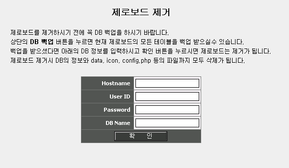

|
Uninstall 1. 제로보드가 생성한 모든 DB 데이타와 파일을 삭제합니다.  1. 선택시 위와 같이 다시 한번 DB 정보를 입력하는 폼이 나옵니다. 1. 제대로 정보를 입력하시면 모든 제로보드 관련 테이블은 DB에서 삭제가 됩니다. 1. 그리고 zb4 pl2 부터는 data, icon 디렉토리등 제로보드 설치후 생성된 파일이 모두 삭제됩니다 1. 꼭! DB를 백업하신후 사용하시기 바랍니다. 1. DB 백업은 제로보드의 관리자 화면에 Uninstall 옆에 있습니다.
|